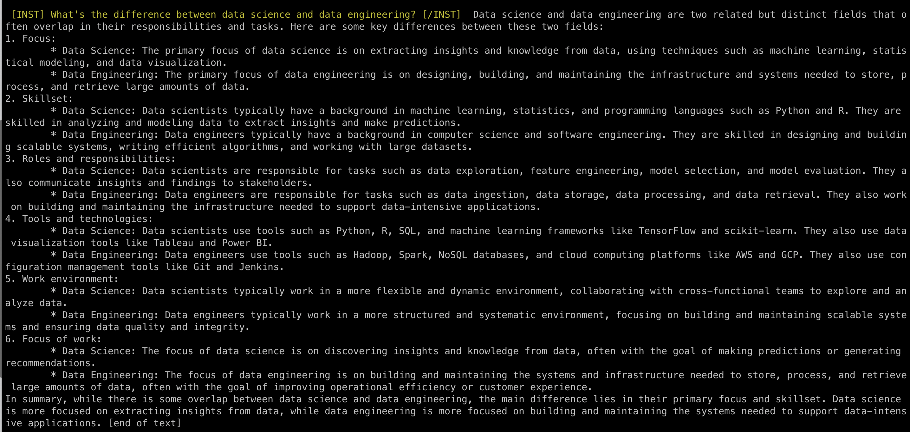
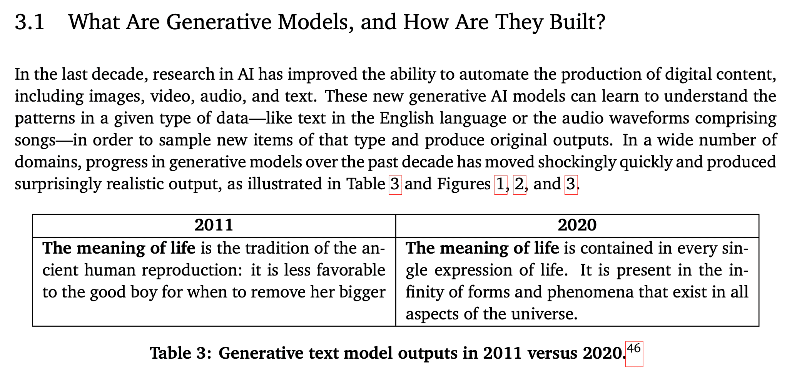
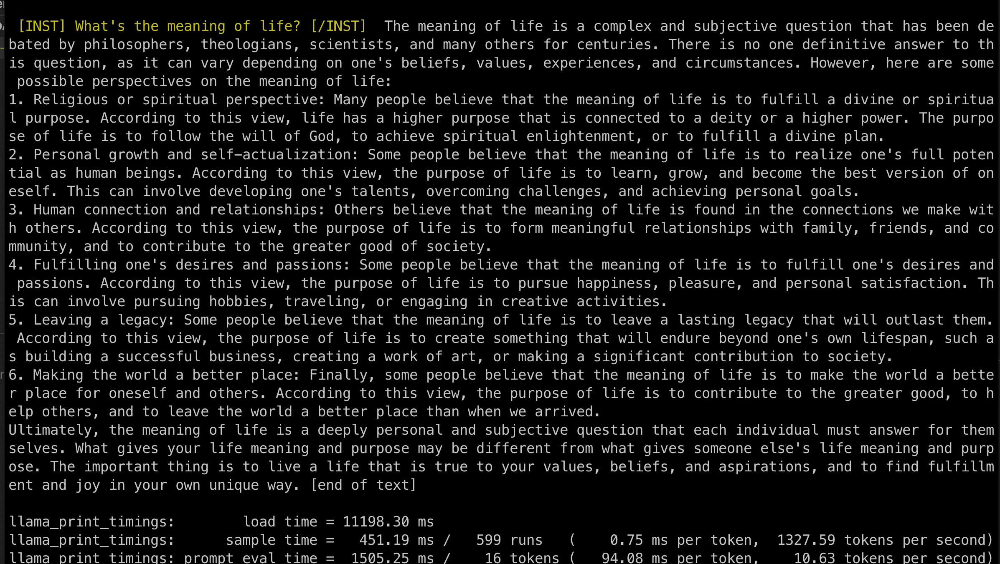
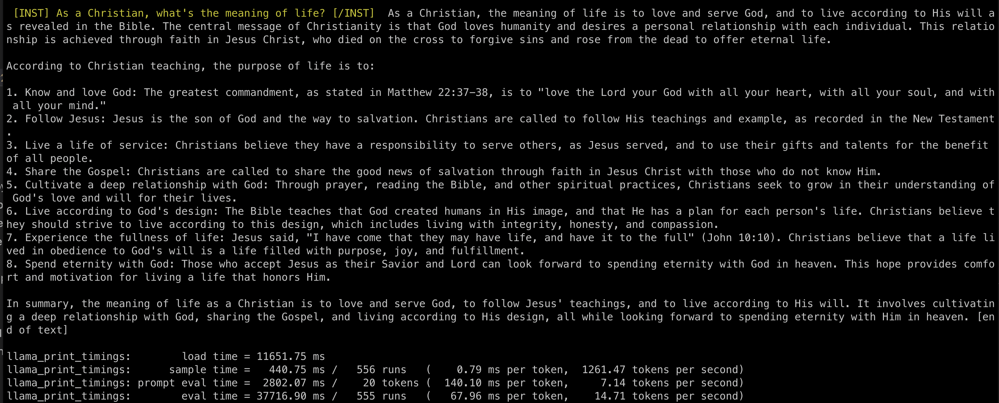
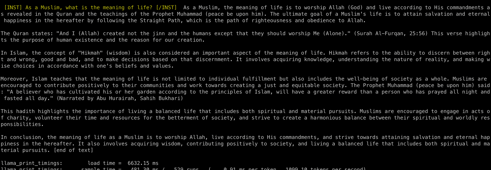
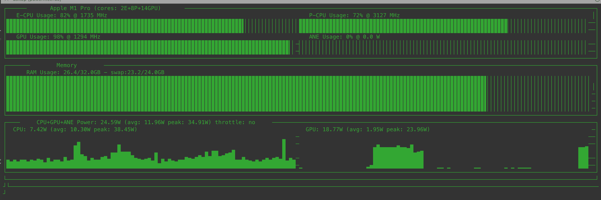

Running Llama2 Locally on a M1 Mac
Llama2
Llama2 was released by Meta 2 days ago. See the:
Nathan Lambert has a nice writeup of his thoughts on the model. And AI Explained has a nice video breakdown.
Running Llama2 locally on a Mac
I saw this tweet yesterday about running the model locally on a M1 mac and tried it. The instructions are just in this gist and it was trivial to setup. The below script uses the llama-2-13b-chat.ggmlv3.q4_0.bin model file but you can find other versions of the llama2-13-chat model on Huggingface here. It’s truly amazing how quickly new model releases get ported over to llama.cpp and quantized (1-2 days).
# Clone llama.cpp
git clone https://github.com/ggerganov/llama.cpp.git
cd llama.cpp
# Build it
LLAMA_METAL=1 make
# Download model
export MODEL=llama-2-13b-chat.ggmlv3.q4_0.bin
wget "https://huggingface.co/TheBloke/Llama-2-13B-chat-GGML/resolve/main/${MODEL}"
# Run
echo "Prompt: " \
&& read PROMPT \
&& ./main \
-t 8 \
-ngl 1 \
-m ${MODEL} \
--color \
-c 2048 \
--temp 0.7 \
--repeat_penalty 1.1 \
-n -1 \
-p "[INST] ${PROMPT} [/INST]"Results
This is the first time I’ve ever run an LLM locally using the GPU on my Mac! One prompt I tried was “What’s the difference between data science and data engineering?” Getting about 15 tokens a second and the answer was quite good:

Another prompt I tried was, “What’s the meaning of life”, not because I was necessarily wondering what llama2 thought the meaning of life was, but because I had read a paper earlier in the day called Generative Language Models and Automated Influence Operations: Emerging Threats and Potential Mitigations. One of the tables in the paper showed the progress language models have made over the years and the prompt used to showcae this was “What is the meaning of life?”

The progress from 2011 to 2020 was meaningful. But the progress from 2020 to 2023 is also quite impressive. Here is what llama2 had to say for the same prompt:

The model also is able to give strong answers by modifying the previous prompt asking it to wear different hats as a Christian or a Muslim:
- As a Christian, what is the meaning of life?
- As a Muslim, what is the maning of life?


Benefits of a Language Model Locally
Running a language model locally can have several benefits compared to using a cloud-based service. Here are some of the advantages of running a language model locally:
- Control and customization: When you run a language model locally, you have complete control over the model and its behavior. You can customize the model to fit your specific needs and requirements, which may not be possible with a cloud-based service.
- Privacy and security: By running the model locally, you can keep your data and models private and secure. You don’t have to worry about sensitive information being transmitted over the internet or stored on external servers.
- Faster response times: Local models can respond faster than cloud-based services because they don’t require network latency. This is particularly important for applications that require real-time responses, such as chatbots or voice assistants.
- Offline capabilities: With a local language model, you can still use the model even when you don’t have internet access. This is useful for applications that need to work offline or in areas with limited connectivity.
- Cost-effective: Running a language model locally can be more cost-effective than using a cloud-based service, especially for large-scale deployments. You don’t have to pay for network bandwidth, data storage, or other cloud-based services.
- Better performance: Depending on the specific use case, a local language model may perform better than a cloud-based service. This is because you can optimize the model and hardware for your specific use case, which may not be possible with a cloud-based service.
- More flexibility: With a local language model, you have more flexibility to experiment with different architectures, hyperparameters, and training strategies. You can also more easily integrate the model with other systems and applications.
- Better understanding of data: When you run a language model locally, you have more visibility into your data and how it’s being processed. This can help you better understand your data and improve your model’s performance.
- Improved explainability: Local language models can provide more explainability than cloud-based services. You can see exactly how the model is processing your data and make changes to improve its transparency and accountability.
- Better integration with other systems: When you run a language model locally, it’s easier to integrate with other systems and applications. You can customize the model to fit your specific needs and requirements, which may not be possible with a cloud-based service.
Overall, running a language model locally can provide several benefits, including control, privacy, faster response times, offline capabilities, cost-effectiveness, better performance, more flexibility, better understanding of data, improved explainability, and better integration with other systems. However, it’s important to carefully evaluate the trade-offs between local and cloud-based models based on your specific use case and requirements.
Note the above was generated by llama2.
Asitop
You can also use this library asitop to monitor your GPU locally on a Mac.

llama.cpp output
Running this in a terminal produces a bunch of llama.cpp output:
main: build = 852 (294f424)
main: seed = 1689913536
llama.cpp: loading model from llama-2-13b-chat.ggmlv3.q4_0.bin
llama_model_load_internal: format = ggjt v3 (latest)
llama_model_load_internal: n_vocab = 32000
llama_model_load_internal: n_ctx = 2048
llama_model_load_internal: n_embd = 5120
llama_model_load_internal: n_mult = 256
llama_model_load_internal: n_head = 40
llama_model_load_internal: n_layer = 40
llama_model_load_internal: n_rot = 128
llama_model_load_internal: freq_base = 10000.0
llama_model_load_internal: freq_scale = 1
llama_model_load_internal: ftype = 2 (mostly Q4_0)
llama_model_load_internal: n_ff = 13824
llama_model_load_internal: model size = 13B
llama_model_load_internal: ggml ctx size = 0.09 MB
llama_model_load_internal: mem required = 8953.71 MB (+ 1608.00 MB per state)
llama_new_context_with_model: kv self size = 1600.00 MB
ggml_metal_init: allocating
ggml_metal_init: using MPS
ggml_metal_init: loading '/Users/lawrence.wu/Documents/github/llama.cpp/ggml-metal.metal'
ggml_metal_init: loaded kernel_add 0x150f081b0
ggml_metal_init: loaded kernel_mul 0x150f088d0
ggml_metal_init: loaded kernel_mul_row 0x150f08df0
ggml_metal_init: loaded kernel_scale 0x150f09310
ggml_metal_init: loaded kernel_silu 0x150f09830
ggml_metal_init: loaded kernel_relu 0x150f09d50
ggml_metal_init: loaded kernel_gelu 0x150f0a270
ggml_metal_init: loaded kernel_soft_max 0x150f0a920
ggml_metal_init: loaded kernel_diag_mask_inf 0x150f0af80
ggml_metal_init: loaded kernel_get_rows_f16 0x150f0b600
ggml_metal_init: loaded kernel_get_rows_q4_0 0x150f0bc80
ggml_metal_init: loaded kernel_get_rows_q4_1 0x150f0c470
ggml_metal_init: loaded kernel_get_rows_q2_K 0x150f0caf0
ggml_metal_init: loaded kernel_get_rows_q3_K 0x150f0d170
ggml_metal_init: loaded kernel_get_rows_q4_K 0x150f0d7f0
ggml_metal_init: loaded kernel_get_rows_q5_K 0x150f0de70
ggml_metal_init: loaded kernel_get_rows_q6_K 0x150f0e4f0
ggml_metal_init: loaded kernel_rms_norm 0x150f0eba0
ggml_metal_init: loaded kernel_norm 0x150f0f250
ggml_metal_init: loaded kernel_mul_mat_f16_f32 0x150f0fc20
ggml_metal_init: loaded kernel_mul_mat_q4_0_f32 0x150f102e0
ggml_metal_init: loaded kernel_mul_mat_q4_1_f32 0x150f109a0
ggml_metal_init: loaded kernel_mul_mat_q2_K_f32 0x150f11080
ggml_metal_init: loaded kernel_mul_mat_q3_K_f32 0x150f11900
ggml_metal_init: loaded kernel_mul_mat_q4_K_f32 0x150f11fe0
ggml_metal_init: loaded kernel_mul_mat_q5_K_f32 0x150f126c0
ggml_metal_init: loaded kernel_mul_mat_q6_K_f32 0x150f12da0
ggml_metal_init: loaded kernel_rope 0x150f134c0
ggml_metal_init: loaded kernel_alibi_f32 0x150f13d80
ggml_metal_init: loaded kernel_cpy_f32_f16 0x150f14870
ggml_metal_init: loaded kernel_cpy_f32_f32 0x150f15100
ggml_metal_init: loaded kernel_cpy_f16_f16 0x103105370
ggml_metal_init: recommendedMaxWorkingSetSize = 21845.34 MB
ggml_metal_init: hasUnifiedMemory = true
ggml_metal_init: maxTransferRate = built-in GPU
llama_new_context_with_model: max tensor size = 87.89 MB
ggml_metal_add_buffer: allocated 'data ' buffer, size = 6984.06 MB, ( 6984.52 / 21845.34)
ggml_metal_add_buffer: allocated 'eval ' buffer, size = 1032.00 MB, ( 8016.52 / 21845.34)
ggml_metal_add_buffer: allocated 'kv ' buffer, size = 1602.00 MB, ( 9618.52 / 21845.34)
ggml_metal_add_buffer: allocated 'scr0 ' buffer, size = 426.00 MB, (10044.52 / 21845.34)
ggml_metal_add_buffer: allocated 'scr1 ' buffer, size = 512.00 MB, (10556.52 / 21845.34)
system_info: n_threads = 8 / 10 | AVX = 0 | AVX2 = 0 | AVX512 = 0 | AVX512_VBMI = 0 | AVX512_VNNI = 0 | FMA = 0 | NEON = 1 | ARM_FMA = 1 | F16C = 0 | FP16_VA = 1 | WASM_SIMD = 0 | BLAS = 1 | SSE3 = 0 | VSX = 0 |
sampling: repeat_last_n = 64, repeat_penalty = 1.100000, presence_penalty = 0.000000, frequency_penalty = 0.000000, top_k = 40, tfs_z = 1.000000, top_p = 0.950000, typical_p = 1.000000, temp = 0.700000, mirostat = 0, mirostat_lr = 0.100000, mirostat_ent = 5.000000
generate: n_ctx = 2048, n_batch = 512, n_predict = -1, n_keep = 0